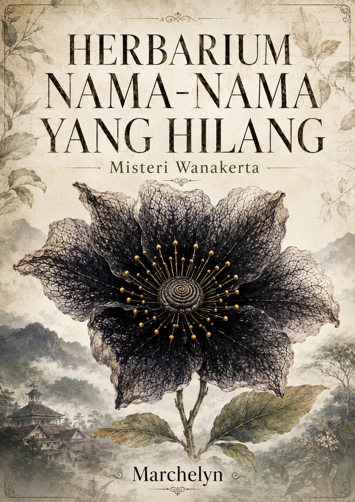

Kota Mati yang masih ramai
Wanakerta disebut Kota Mati bukan karena kosong, melainkan karena terlalu banyak sejarah, jalan, dan nama dipaksa berhenti tumbuh.
Misteri Wanakerta
Di kota kecil yang ingin terlihat sudah sembuh, sebuah toko herbal tua menyimpan catatan yang lebih jujur daripada arsip kelurahan.
Tentang Novel
Dari naskah, worldbuilding, dan character bible, inti promosi novel ini bukan sekadar "ada hutan menyeramkan". Daya tariknya ada pada kota yang terasa nyata: pasar, puskesmas, polsek, sekolah, warung kopi, arsip digital yang kacau, proyek wisata herbal, dan warga yang tahu kapan harus berhenti bicara.
Wanakerta disebut Kota Mati bukan karena kosong, melainkan karena terlalu banyak sejarah, jalan, dan nama dipaksa berhenti tumbuh.
Jahe, secang, kecubung, gadung, sampai Rengganis Hitam tidak hadir sebagai hiasan. Di sini, tanaman menjadi bahasa, bukti, memori, dan peringatan.
Nama lengkap, nama panggilan, nama yang dicoret, dan nama yang tidak berani disebut membentuk hukum moral Wanakerta.
Arsip bisa hilang karena lembap, salah eja, kebakaran, digitalisasi asal-asalan, atau karena seseorang memang ingin membuat sejarah terlihat rapi.
Kesan Bacaan
Novel ini cocok untuk pembaca yang menyukai atmosfer pegunungan berkabut, toko tua, teka-teki keluarga, kota kecil dengan gosip yang lebih cepat daripada kendaraan, dan horor yang terasa makin dingin justru ketika semua orang bersikap biasa saja.

Peta Interaktif
Titik ini dibuat dari peta Wanakerta dan catatan worldbuilding. Pilih lokasi untuk membuka catatan promosi tanpa membocorkan jawaban besar novel.

Orang-Orang Wanakerta
Arsip Interaktif
Bagian ini dirancang seperti meja racik Rara: sedikit catatan, sedikit peta, sedikit bau tanah basah, dan cukup pertanyaan untuk membuat pembaca ingin membuka novel lengkapnya.
Pilih satu jalur. Wanakerta akan menjawab dengan cara yang tidak sepenuhnya sopan.
Kamu memilih jalan yang ramai. Banyak mata, banyak suara, banyak kemungkinan seseorang melihat sesuatu lalu pura-pura tidak melihatnya.
Ketik nama untuk mendapat catatan herbarium kecil. Tidak disimpan, hanya dimainkan di browsermu.
Botanical Gothic
Catatan ini bersifat fiksi dan naratif. Tanaman di novel dipakai sebagai simbol, petunjuk, dan atmosfer, bukan panduan medis, racun, atau penggunaan nyata.
Tanaman fiktif sentral
Bunga hitam dengan aroma yang berubah mengikuti ingatan dan rasa bersalah. Ia bukan sekadar monster, melainkan tanda bahwa sebuah nama sedang dipanggil.
Di dunia Wanakerta, kemunculannya selalu berarti ada kebohongan yang terlalu dekat dengan permukaan.
Herbarium Nyata
Bagian ini menambah rasa “ilmu herbarium” tanpa mengubah website menjadi panduan pengobatan. Isinya fokus pada nama, bagian tanaman, aroma, budaya, dan peran atmosferik dalam novel. Tanaman berisiko diberi penanda khusus dan tidak boleh dicoba-coba.
Novel memakai tanaman sebagai bahasa cerita: aroma, arsip, simbol, dan petunjuk. Informasi di sini bukan resep, dosis, diagnosis, atau saran terapi. Jika sedang hamil, menyusui, punya kondisi medis, atau memakai obat, jangan memakai herbal sebagai terapi tanpa tenaga kesehatan.
Papan Kasus
Pilih satu jejak
Setiap petunjuk sengaja dibuat menggoda tanpa membuka kunci terakhir cerita.
Dengarkan Suasana
Putar audio ini sebagai pintu masuk suasana: botol kaca, daun kering, kabut, dan sebuah nama yang mungkin lebih dulu mendengarmu.
Daftar Bab
Sebelum Membeli
Bukan. Ketegangannya tumbuh dari keluarga, arsip, tanaman, warga yang diam terlalu kompak, dan rasa tidak nyaman yang menempel setelah halaman ditutup.
Unsur herbal dipakai sebagai bahasa cerita dan atmosfer. Novel ini bukan panduan medis, farmasi, penggunaan tanaman, atau praktik budaya dunia nyata.
Cocok untuk pembaca misteri atmosferik, kota kecil penuh rahasia, botanical gothic, drama keluarga, dan folk horror yang tidak berisik.
PDF novel lengkap bisa dibeli melalui halaman Marchelyn di Lynk.id.
Masuk ke Herbarium
Beli novel lengkapnya dalam format PDF dan ikuti sendiri jalan dari Pasar Legi, ruang herbarium, Sumur Bisu, sampai hutan yang mengingat terlalu banyak.